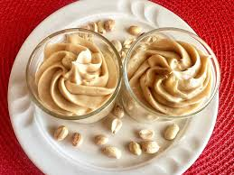

4 Ingredient Peanut Butter Mousse

Description
This 4 ingredient peanut butter mousse makes a small batch, ideal if you only need 2 servings. It‘s light and creamy, not too sweet with a bit of a tang, and super easy to make.
Ingredients
- 2 ounces Neufcâtel cheese, softened
- ¼ cup peanute butter
- ¼ cup confectioners' sugar
- ½ cup heavy whipping cream
Directions
- Beat Neufcâtel cheese, confectioner's sugar, and peanut butter together in a bowl until smooth and well combined. Set aside.
- Place heavy whipping cream in another bowl and whip until medium peaks form. Add peanut butter mixture and whip just until combined.
- Divide evenly into 2 serving glasses. Serve at once, or cover and refrigerate.